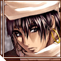
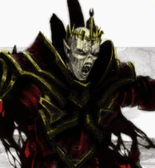

Forums galactiques > Assemblée Galactique : diplomatie officielle > Présentations
| Chiana Respect diplomatique : 1345  19/05 ETU 13:06 | Score : 7 Détails Libertalia était enfin sortie de la torpeur des bombardements hyperatomiques qui avaient secoué la Galaxie Origine. Un vaisseau de l'Organisation Renégate s'était écrasé au sol et les Récupérateurs avaient réussi à mettre la main sur la technologie des transmissions holographiques ainsi que sur un mode d'emploi tout roussi. Bien entendu, aucun membre d'équipage n'avait survécu au crash du vaisseau. Le matériel fut rapporté vers la capitale et, dans la précipitation, finit miraculeusement dans le bureau de Chiana, Responsable de la Guilde Libertalienne.
Curieuse, elle tripota l'appareil et finit par enclencher le programme de transmission. Une voix métallique et usée lui fournit les premiers renseignements sur l'objet principal de ce ... "bidule" : "- La communication avec l'Assemblée Galactique est assurée à 75%, vous pouvez parler". Une jeune femme à la peau blanche, aux cheveux blancs apparut alors, enfin seulement son visage, filmé en gros plan alors qu'elle étudiait le "bidule" ... "- L'Assemblée Galactique ? C'est quoi ?", le "bidule" lui répondit : "- Définition : Assemblée regroupant les Commandants de toute la Galaxie et permettant des discussions diplomatiques, des votes et offrant un vaste réseau de connexions vers des milliers de mondes." "- Wha ! Trop chouette, bon je le garde le bidule ..." "- L'ordinateur de L'Assemblée Galactique indique que c'est votre première prise de parole : vous êtes priée de vous présenter." "- Ah ouais ? Salut, je suis Chiana." "- Présentation trop succincte, veuillez approfondir." "- Je suis la Responsable de la Guilde Libertalienne, je suis heureuse de voir que nous ne sommes pas seuls dans cette Galaxie. Mon peuple et moi tâcherons de ne pas décevoir les autres chefs de bandes de la Galaxie. Vous savez, ici sur Libertalia, nous avons assisté aux terribles combats que se sont livrés les deux organisations de contrebande et on se sent un peu seuls donc si quelqu'un pouvait nous répondre et nous rassurer sur la fin des combats, ce serait sympa ... Il faut bien dire qu'on flippe un peu : la récupération des carcasses des vaisseaux de l'Organisation Renégate nous a livré de nombreux bidules technologiques et on sait pas tout utiliser ! Au fait : quelqu'un m'écoute ou je parle au vide sidéral ? Hey, bidule, tu sais si quelqu'un m'écoute au moins ?" "- Cette unité ne peut répondre, elle est trop endommagée" ...... "- Bon, si quelqu'un a entendu mon appel, je vous remercie de me répondre. Ce serait sympa surtout s'il est jeune, riche et mignon ... Voilà, bon, ben, à plus !" ..... "- Si votre message est terminé, veuillez couper le transmetteur." "- Mais, y me gonfle ce ...." La transmission fut coupée brutalement. | ||
| Huor Silimaure Respect diplomatique : 125  19/05 ETU 13:08  | Score : 0 Détails WHOOOOO une JOLIE FEMME "Huor Silimaure bava pendant des secondes"
HEIN COMMENT ?? Elle ressemble à un vampire BEURK "Huor Silimaure prit ses jambes à son cou" | ||
| Le Troll Respect diplomatique : 75  19/05 ETU 18:19 | Score : 3 Détails Je viens de Shlipak, la planète des Trolls. On a regréssé encore plus suite à l'Apocalypse, même si nous n'étions pas évolué. Je me sentais tout petit, même si à la base je faisais 5 mètres de haut. Je me sentais faibles, pour la première fois ...
| ||
| @POC@L!PSM@N!@ Respect diplomatique : -4  19/05 ETU 22:54 | Score : 2 Détails Mon nom est Apocalpsmania, serviteur de Khorne, le Dieu du sang.
Seul le chaos prospère dans mon sillage. J'ai rasé des civilisations entières, et les cris d'agonies de ces peuples furent pour moi le plus intense des plaisir, et je les entend encore dans mes plus beaux rêves. Mes ennemis m'appelle l'"Ange de la mort", le "Seigneur de l'apocalypse", ou encore "El Diablo". Tous ses noms ne sont qu'une facette de ma personnalité. Craigner Khorne, simples mortels, le chaos est sur vous ! | ||
| Hadès Respect diplomatique : 29  20/05 ETU 01:32 | Score : 3 Détails Mon nom est Hadès, dieu de rien du tout car je n'ai pas la prétention d'être dieu à la place de dieu.
Je suis affilié comme un inconditionnel dubitatif. Ce qui fait que j'agis sans savoir, qui je suis, où je vais et pire, sans savoir ce que je fais. Quelques un de nos collègues membres de cette Assemblée me connaissent déjà plus ou moins. Je dirais même plutôt moins que plus étant donné le doute que je sème à mon entourage comme à moi même. En somme la vie n'est pas simple ... et pour personne. De plus, commandant Apocalpsmania, il me semble que vous avez un de vos surnoms : ‘Le roi de la Modestie’. Bien à vous tous, Hadès | ||
| Sylvania Respect diplomatique : 394  20/05 ETU 03:34 | Score : 1 Détails Je me nomme Sylvania et je suis la fille de la Pretresse assassinée, je parcourt la Galaxie a la recherche de l'homme qui a tué ma mère et je transmet par la meme occasion la Parole sylvaine aux peuples égarés
(Pour plus de détails voir "un réveil difficile") | ||
| Gerolstein Respect diplomatique : 161  20/05 ETU 09:50 | Score : 3 Détails Mon est Gerolstein.
Afin de tranquiliser les esprits fragiles(j'espère qu'il n'y en a pas trop) je ne suis pas gOlstein. Même si mon nom semble ressembler à celui de l'Archichancelier, je préviens que mon esprit n'est en aucun cas le même. Après ce tranquilisant, je puis enfin me présenter. Je suis le dernier descendant de la famille Olstein, une grande famille de marchands. Mon prénon est Ger mais ma culture fait que le nom de famille et le prénom sont attachés. Je vous annonce que je serais neutre dans chacun de vos conflits. Je pourrais fournir soit l'un soit l'autre ou les deux selon mes envies. Ne soyez pas étonner de me voir changer d'avis et d'esprit d'un topic à l'autre étant donné que ma race de marchand neutre et (quelquefois) cruel qui me donne plusieurs en un seul cerveau. J'espère que vous ne serez pas perturbé par l'impureté de ma race. Je serais notamment cruel mais je n'attaquerais pas qui que ce soit. La seule guerre que je mènerais sera la guerre de la parole qui est la plus noble. Je vous souhaite une bonne compagnie avec moi. Gerolstein, l'Hypocrite marchand (sachez que toutes mes signatures ne seront pas les mêmes hormis mon nom) | ||
| Samsagace Respect diplomatique : 155  20/05 ETU 09:59 | Score : 2 Détails Je suis Samsagace. Autrefois appelé Général Obi-Wan, j'ai été tué par les Ultrèmes que j'ai dénoncé publiquement. Alors des scientifiques ont prélevés mon âme et l'ont mise dans un clone du Hobbit Samsagace Gamegie. Alors j'ai pris son nom. J'ai essayé d'installer la paix, avec des alliés, que je voudrais plutôt qualifiés "d'amis", quand j'ai voulu aller chez les Ultrèmes, et je ne sais toujours pas pourquoi je l'ai fait. Ensuite Napoléon m'a renvoyé, car je devais être trop "dégénéré" pour êrre admis, et je me suis juré de ne jamais refaire la même erreur, c'est-à-dire de trahir mes propres croyances et mes propres amis.
Quand l'Apocalypse est arrivé, je voulais l'attendre pour que ma vie prenne fin. Puis comme je l'ai déjà dit, quelqu'un m'a sauvé. Ce quelqu'un est Bartarengis. Aujourd'hui encore plus motivé pour aider les autres et essayer d'installer la paix dans la Galaxie, j'espère ne pu avoir à refaire une grave erreur comme il a été le cas pendant longtemps. On m'appelle Sam le Pathétique, mais Sam le Maladroit ou Sam le Perdu (en rapport à ce que je ne trouvais ma place nulle part) auraient été plus qualifiés. Sam le Pathétique. | ||
| Mina Borgia Respect diplomatique : 31  20/05 ETU 11:24 | Score : 6 Détails La nuit était déjà bien entamée, seule la lune rousse, ce soir, éclairait les rues de la veille ville d'Oringtown. L'épais brouillard qui s'était installé étouffait le moindre son et participait à l'étrange sensation dramatique et fantastique que dégageait la grande rue déserte. Mina marchait seule en ces lieux proches des bas quartiers. Elle était pale et ne semblait pas au mieux de sa forme. Son pas cadencé, trahissait une certaine nervosité. Soudain la voix d'un homme adossé à une façade rompit la quiétude des lieux :
« - Hé poupée, tu viens faire un tour avec moi dans la ruelle ? » L'arrogance de son sourire narquois ne laissait aucun doute sur ses intentions. Mina s'approcha de lui le toisa un instant, puis lui murmura à l'oreille « - Allons-y, je vous suis » L'homme resta interloqué devant cette réponse à laquelle il n'était absolument pas préparé. Après ce court instant d'hésitation tout deux disparurent dans la ruelle avoisinante... A peine put-on entendre un râle étouffé qui troubla pendant un court instant la quiétude des lieux. Quelques secondes plus tard, Mina réapparut et sortit seule de cet endroit sombre. Elle semblait rayonnante, sereine et son visage avait reprit un peu de couleur. Elle sortit un mouchoir de sa manche et reprit son chemin tout en essuyant les légères traces de sang qui ornaient le coin de sa bouche. Elle disparu dans le brouillard, accompagné du seul son étouffé de ses pas sur les pavés usés. | ||
| FuZati Respect diplomatique : 2  20/05 ETU 13:20 | Score : 2 Détails FuZati, humain (cela reste à prouver) de taille moyenne avec sa traditionnelle chemise rose et son masque livide s'installa au fond de l'assemblée.
Les présentations et les débats s'enchainère. Cinq minutes plus tard Fuzati déjà lassé de cette faune incompréhensive, se mis à raconter des insanités dans son microphone. Les conversations s'arréteres nette, il se leva et dis: "Pour tous les commandants que j'ai croisés et ceux que je croiserais un jour j'ai ce message: NE ME PARLEZ PAS." Il se leva descendit les marches, cracha par terre, se retourna vers l'Assemblée et ce trancha les veines maculant le premier rang de son sang livide, puis il sortit sans un regard sur cette Assemblée ou il ne remettrait sans doute jamais les pieds... | ||
| Nevad Respect diplomatique : 8  20/05 ETU 13:38 | Score : 3 Détails (croisant le pitre masqué, un homme aux étranges manières rejoignit le parterre de diplomates)
Je suis Nevad, 3eme baron de la droite lignée. Veuillez pardonner mon attachement sans doute excessif à ce titre...Cette coquetterie ne prouve en rien ma valeur, mais j'aime à rappeler cette charge que je porte avec fierté. Noble de sang, et, je l'espère, de coeur, je suis mandaté par le Prince de ma planète natale, Alek, pour représenter parmi vous les intérêts de ma patrie. Alek est membre de l'auguste Alliance, et nous gardons foi en la renaissance d'une faction dont le qualificatif d'éternelle ne put empecher sa triste chute. Trêve de verbiage. Ravi d'être à vos côtés. Nevad | ||
| arkos Respect diplomatique : 34  20/05 ETU 14:38 | Score : 4 Détails (un jeune homme au corp marqué par la radiation arriva dans l'assemblé et pris la parole)
"Commandants commandantes je vous salue. Je me présente, je suis Arkos commandant elu démoocratiquement a vie de ma planete. Je vous souhaite a tous réusite et prospériter dans cette nouvelle ere que nous allons batir.Nous avons la chance et l'opportunité de batir un monde nouveau ne le gachons pas longue vie a vous tous" | ||
| Vetinari Respect diplomatique : 79  20/05 ETU 19:23 | Score : 6 Détails Un homme entra.Il était sobrement habillé de teintes de gris et de noir.Ses cheveux noirs également étaient plaqués en arrière et sa barbe était coupée au millimètre près.Il prit la parole:
Bonjour à vous.Je suis Havelock Vetinari.Je viensd'être "nommé" à la tête du commandement de ma planète.J'ai l'intention de créer un rassemblement de guildiens pour qu'ils puissent ensemble réaliser leurrève:gagner le plus possible d'argent. | ||
| Matt Kid Respect diplomatique : 33  20/05 ETU 20:54 | Score : 6 Détails L’Assemblée était calme…
Les commandants étaient tous assis. Paisiblement ils parlaient entre eux. C’est à ce moment là que Matt Kid décida de se lever et de se présenter à tous. Il se leva descendit les escaliers qui menés au milieu de l’Assemblé. Un vent doux traversait la grande salle et le Soleil qui allait se coucher, fit une dernière apparition, en éclairant le centre du de l’Assemblée. Matt n’espérait pas meilleure condition pour se présenter, et arrivant au centre de la salle, il s’arrêta. Regardant autour de lui, il ouvrit son grand manteau. Les commandants, aux alentours, intriguaient de ce qui se passé s’approchèrent peu à peu pour voir ce que Matt trifouillé et qu’elle ne fut pas leur étonnement de voir que le manteau de Matt, était remplie de petites capsules et d’autres boites diverses et variées. Aucun commandants jusqu’à lors n’imaginaient cela dans le manteau de Matt. Celui-ci sans faire attention au chuchotement des autres commandants qui l’entouré, sortit une petite boite métallique qu’il posa par terre, suivit d’une petite télécommande qui paraissait bien compliqué. Autour les commandants restaient bouche bé devant le spectacle qui s’offrait à eux. Matt, impassible, dirigeant la télécommande vers la boite et appuya sur un bouton : rffffff !!!!!! Un bruit étrange sorti de la boite qui augmenté peu à peu… RfFfFf !!!!! Il ne cessait d’augmenter… RFFFFFFFFFFFFFFFFFFFFFFFFFFFFFFFFFFFFFFFFFFFFFFFFFFFFFFFFFFFFFF !!!... Enfin le bruit s’arrêta net, Matt paru intrigué de ce qui venait de se produire. Il regarda l’Assemblée et voyant qu’on le regardait, il parut déstabilisé et avec un air d’étonnement, il s’approcha de la boite. S’agenouillant, il tendit l’oreille sur celle-ci. Ses sourcils se froncèrent d’un coup et il sorti d’une de ces poches intérieures de son manteau un petit instrument, semblable aux anciens mais néanmoins pratique tournevis, celui-ci était bourré de technologie et de boutons. Mais Matt le connaissait parfaitement d’après la vitesse avec laquelle il le manié, il le dirigea vers une encoche de la boite. Cela ne changea rien à l’affaire. Les commandants autour parurent un tantinet impatient, ce qui stressa Matt, certains même partirent, mais les plus patients restèrent (ils connaissaient les petits caprices des nouvelles technologies). Matt alors se releva, toujours aussi pensif…faisant un tour complet de la boite, il s’arrêta de nouveau… et ni d’une ni deux, il prit un peu d’élan et donna un grand coup de pied, de toute ces forces à la boite… RFFFFOOOOUUHUUUUU, un bruit immense sorti alors de la boite, ce qui fit trembler le sol. Les commandants autour s’éloignèrent un peu sous le tremblement alors que les commandants qui s’en allaient revinrent aussitôt pour voir se qui se passé. Sous cette atmosphère d’intrigue et de mystère une épaisse fumée sorti de la boite ce qui entoura Matt et le centre la pièce. Tout le monde se demandait ce qui se passé, car derrière la fumée on ne voyait plus rien. Leur attente n’allait pas être vaine…. Soudain derrière le nuage de fumée on aperçut peu à peu apparaître un écran géant, tandis que la fumée disparaissait, Matt apparut, lui aussi, content que son invention fonctionne ! Tout le monde parut soulagé, mais intrigué de savoir d’où provenait cette écran géant, alors que quelques instants auparavant il n’y avait qu’une toute petite boite, quand soudain on entendit une voix d’outre-tombe, et un texte flou apparaître à l’écran : « Bounjours a Touts, commmadantess hé commann-dents, jé mais prétzente… » Les commdants en lisant ça parurent horrifiés, Matt qui ne regardait pas l’écran ne comprenait pas ce qui se passait mais en se retournant, il vit l’erreur et parut littéralement mourir de honte ! Courant sur sa télécommande qui gisait par terre il s’élança de tout son long et plongea sur le ventre attrapa la télécommande et d’un geste presque indescriptible il se retourna sur le dos et appuya sur un bouton, qui éteignit l’écran. Soulagé, Matt se releva et ré-appuya sur plusieurs boutons, à une grande vitesse puis il attendit, comme tout le monde autour de lui. Les visages atrophiés des commandants peu à peu se détendirent, ils ne savaient plus où donner de la tête après tous ces événements. Quand une nouvelle fois une voix apparut, cette fois ci elle était céleste et calme. Un nouveau texte apparut mais bien mieux écrit, avec des images diverses des inventions de Matt. Le silence se fit dans l’Assemblée, tous les commandants étaient attentifs. La voix disait : « Bonjours à toutes les commandantes et à tous les commandants, je m’appelle Matt Kid et je suis un scientifique aguerri de mon état mais principalement inventeur ! Je me présente à travers cette écran pour que tout le monde puisse clairement entendre et car je suis un tout petit peu timide !^^ Natif d’une très ancienne planète je me déplace grâce à toutes mes inventions dans mon vaisseau construis de mes propres mains. Je m’arrête souvent dans diverses galaxies pour remettre à neuf mes stock d’inventions, pour en faire des nouvelles, pour connaître des nouvelles technologies, pour me faire des amis et des amies^^, et pour réparer les machines des autres commandants qui ont des problèmes. Ainsi j’annonce que bientôt je vais ouvrir, dans la taverne, le LIM, au plus simplement le Laboratoire d’Invention de Matt. M’étant arrête sur une planète je suis pacifiste, mais je peut user de mes machines pour me défendre contre des assaillants. Je vous remercier de m’avoir écouté et je vous souhaite de passé une bonne fin de journée ! Encore merci » Matt s’approcha alors de son écran qui avait dû lui coûter chère et appuyant sur un bouton caché, tout se plia pour rentrer dans la boite sous l’admiration des autres commdants. Matt rangea alors son matériel, salua tout le monde et repartit s’asseoir en attendant les nouvelles présentations. Les autres commdants firent de même. (PS : Hé oui ! Les inventeurs, ils sont comme ça, ils font plein de bruit pour presque rien !^^) | ||
| athéna Respect diplomatique : 97  21/05 ETU 11:24 | Score : 2 Détails Une brise souffla sur l’assemblée, et une magnifique jeune déesse s’avança .tout les commandants demandaient qui cela pouvait être.
La déesse pris la parole: « je me présente Athéna déesse de la guerre, de la civilisation,du foyer et de la protection. Je suis envoyé par Zeus mon père pour assurer le bon fonctionnement de la galaxie. Je vous remercie de m’avoir écoutée. La déesse disparue comme elle était venue | ||
| Alfirin Respect diplomatique : 12  21/05 ETU 11:58 | Score : 3 Détails Une jeune femme s'avanca lestement au centre de la salle...Ses longs cheveux blonds redescendaient sur ses épaules, ses mains était tatouées d'un ensemble de signes anciens tel un gant de dentelle noire, ses yeux d'un gris argenté refletaient les lumières autour d'elle...
"Bonjour à toutes et à tous, je suis Alfirin...J'aspire a une galaxie de paix et d'entente...Puissent les astres nous porter chance...Merci de votre écoute..." Elle s'en alla comme elle était venue... | ||
| Seigneur Héxéris Respect diplomatique : 4  21/05 ETU 15:03 | Score : 4 Détails *Un humanoide en armure rouge aux bordures dorée se leva, décidé à rompre le silence. Il avait la peau blanc jaune, un teint presque maladif. Sur son visage cruel, une machoire proéminente et effilée était dominée par un nez creux, et des yeux où brillait une lueur sadique. Son crâne chauve orné d'une petite crête osseuse percée en deux endroit par des anneaux de bronzeétait flanquée de deux oreilles pointues, elles aussi ornées de divers anneaux du même métal.
Dans ses doigts crochus, il tenait une vouge, apparemment une arme cérémonielle à en juger par les ornements qui la parait. Il prit la parole d'une voix enrouée mais assurée.* "Je suis le Seigneur Tyran Héxéris, Seigneur des légions de Skornes. Depuis notre capitale Haalak, nous venons de retrouver l'usage de nos vaisseaux spatiaux, après cet atroce tempête magnétique qui a ravagé la galaxie. Cependant, nos moyens de communication sont réduits comme une peau de chagrin. Tant et si bien que nous avons perdu le contact avec les milliers de mondes qui formaient autrefois notre vaste Empire. Cependant, nous allons montrer à ces ignares ce qu'il en coûte de se rebeller contre Skorne la toute puissante. Nous allons à nouveau étendre notre ombre sur la galaxie et ce par la force de nos armes et par le feu. Le sang coulera à flot, le peuple se délectera des souffrances que nous lui infligerons. Vous êtes prévenus, ne vous placez pas entre Skornes et son destin de conquêtes. Ou vous le regretterez, ça je peux vous l'assurer, rien ne resiste à nos toutes puissantes armées, ni la pierre, ni l'acier ni même le passage du temps n'auront raison de nous." *Il quitta la salle, drapé de toute la splendeur d'un souverain.* | ||
| Nell Respect diplomatique : 38  23/05 ETU 18:09 | Score : 6 Détails Un homme pousse les portes de l’Assemblée et les maintient ouvertes.
Une jeune femme entre d’un pas sûr et rapide. Sa longue jupe noire flotte autour de ses jambes. Elle ne s’était pas rendue compte qu’elle était arrivée et continuait à discuter, une pointe d’exaspération se faisait ressentir. Lorsqu’elle jeta un coup d’œil à cette salle, qu’elle vit tous les regards posés sur eux, elle se tut. Arrivée près de Maoro, certains l’entendirent murmurer : « Gracie » Puis il sortit de la salle, refermant les portes derrière lui. Elle s’avança devant l’Assemblée. Un sentiment de mal à l’aise se fit ressentir lors de son passage. « Buongiorno, je m’appelle Nellimina Zucchiatti…mais Nell suffira. » Sa voix était étonnement douce et contrastait avec ses yeux sombres. « Mon père, qui était à la tête d’un grand empire, s’est fait lâchement assassiner par son plus proche collaborateur et ami. Sa flotte fut démantelée et les planètes qu’ils dirigeaient furent soumises à la dictature de leur nouveau possesseur. Un oublie de taille lui coûtera la vie : moi. » Un sourire se dessina au coin de ses lèvres. Un frisson parcourut l’Assemblée. « Trahison, infidélité, lâcheté…cela est certes confortable mais coûtera beaucoup à quiconque s’en vantera devant moi.» Elle observa plus attentivement les commandants présents, en remarqua certain. Nell salua l’Assemblée avec un sourire. La tension diminua. Elle se dirigea vers la sortie. Avant que les portes ne se referment, tous purent la voir repartir avec cet homme qui devait faire une bonne tête de plus qu’elle. Il lui parlait vite avec des gestes brusques. Ils accélérèrent. | ||
| Revan82 Respect diplomatique : 545  24/05 ETU 00:10 | Score : 1 Détails Un commandant avec une capuche qui cachait son visage s'avança vers le pupitre :
Je me présente, je suis Revan, commerçant de la guilde, je viens de la planète Viretopra. Je suis devenu membre de l'assemblée galactique un peu par hasard en prenant possession des bureaux administratifs de ma planète pendant une révolte apres le cataclysme. La survie de mon peuple est mon principal soucis, mais je prône aussi la paix dans la galaxie. Je prefere fournir des materiaux plutôt que des armes. La guerre n'est pas ce qui m'interesse, je trouve que moins il y aura de morts et plus je m'enrichirais. Revan partit se rasseoir pour laisser la place à un autre commandant. | ||
| le renard Respect diplomatique : -20  24/05 ETU 00:25 | Score : 5 Détails un renard arriva dans la salle :"
mis en place du traducteur : -z-z-z-z-z-zz-e-e-e-r langue choisis terrienne * bonsoir madame et monsieur je me présente renard de la planète foret voila l'histoire de mon peuple : après un combat acharné contre les ultrèmistes nous les renardes notre espèce mourus peu a peu quand une ha d'ultrèmes nous donna des effets secondaires un renard mort pouvais se régénérer en 1 s et la méthode de reproduction est bien bizarre nous pouvons nous accouplé qu'avec des humaines la planète foret est une immense planète dont les habitations terrienne sous forme de ruine on disparut de notre forêt notre espèce devenu intelligente nous pouvions faire tout comme des humains et même plus nous nous mirent alors a la conquête d'autre planète pour les étudier ,ou s'y installer si elle était vierge moi pour ma part je suis un des rares survivant de la ha qui a fait un ravage sur notre peuple madame et monsieur au revoir et bonne soirée * traduction finish " le renard sortit de la salle |
Forums galactiques > Assemblée Galactique : diplomatie officielle > Présentations